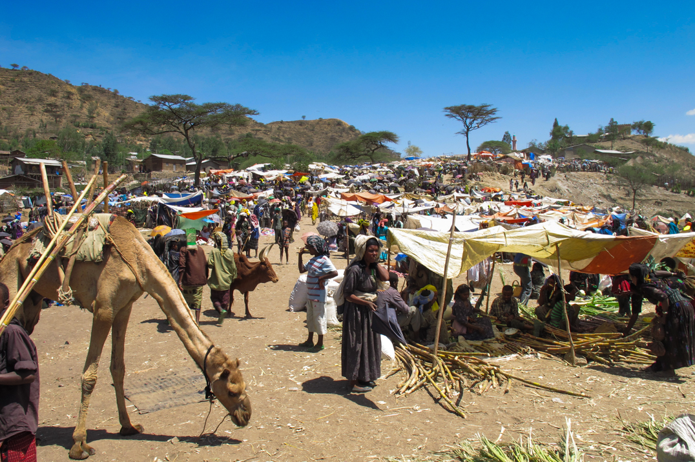

Iteneraries
Ethiopia historic route and Simien Mountains Park by flights – MT02
Complete tour in the North of Ethiopia by internal flights that
allows to go in a fast and comfort way the big distances that
separate the monumental sites, enriched with naturalistic [...]
Ethiopia historic route and Tigray rock hewn churches by flights –
MT03
Complete tour in the North of Ethiopia by internal flights, that
allow to travel in a fast and comfortable way the big distances that
separate the monumental sites, enriched with the fascinating [...]
Ethiopia complete historic route by land and flights: – MT04
Complete tour to North Ethiopia by ground transportation that allows
to appreciate the variety and width of unique Ethiopian plateau
sceneries. Two internal flights enable to reduce the transfer time
from Addis [...]

Ethiopia complete historic route by land – MT05
Complete tour to North Ethiopia with all transfers by surface,
allowing a complete experience of the variety and width of unique
Ethiopian plateau sceneries. It’s the ideal combination for
slow-travel lovers enjoying [...]
Alternative South Ethiopia tour – MT08
South Ethiopia is still able to surprise even the most experienced
travelers. Several years past since 4 wd cars from organized tourism
started going through the southern regions in Ethiopia, but there
[...]

East Ethiopia: complete Danakil tour with markets – MT10
Complete itinerary that, after several interesting stops along the
road to visit colorful markets, will lead you to the Danakil
depression in all of its most attractive corners: from the capital
of [...]

Djibouti complete itinerary: sea and volcanoes – MT27
Complete itinerary of Djibouti where you can visit the most
significant places that this little country can offer: the sea, deep
blue surrounded by black volcanoes, one of the most beautiful coral
[...]
East Ethiopia: short trekking in Bale National Park – MT13
Six days itinerary that allows to visit the most important national
park in the South of Ethiopia, that in a high mountain environment
preserves a huge variety of avifauna and endemic flora [...]

East Ethiopia: long trekking in the Bale National Park – MT14
Nine days trekking that allows to fully visit the most important
national park in the South of Ethiopia, that in a high mountain
environment preserves a huge variety of avifauna and endemic [...]

North Ethiopia: short trekking in the Simien National Park – MT15
High mountain itinerary with landscapes full of escarpments and deep
canyons that are populated by the Simien walia ibex, the Ethiopian
wolf and many droves of Gelada baboons . The landscapes running
[...]
North Ethiopia: long trekking in the Simien National Park – MT16
High mountain itinerary that allows you to go through the whole
Simien Mountain National Park and surroundings countryside. From the
escarpments and canyons in Sankaber, populated by the Simien Walia
Ibex, the [...]

East Ethiopia: expediton to Sheick Hussein and Bale – MT12
Original trip that brings you into the less known areas in Ethiopia:
the Muslim-sufi East and Bale National Park. Spectacular landscapes
are the scenery of a religious life much different from the [...]

East Ethiopia: extension to Dallol – MT19
Three days extension that allows you to visit the Dallol area, the
black lake, the salt plain, where the local people still manually
extract salt, that is then carried by endless caravans [...]

North Ethiopia: community trekking extension in Tigray – MT25
Three days extension that offers to the trekking lovers the
opportunity to live an intense experience with the local community:
Tesfa organizes several trekking circuits using guesthouses managed
by the community. They [...]
North Ethiopia: community trekking extension in Lalibela – MT24
Three days extension that offers to the trekking lovers the
opportunity to live an intense experience with the local community:
Tesfa organizes several trekking circuits using guesthouses managed
by the community. They [...]

East Ethiopia: extension to Bale National Park – MT23
Four days extension that allows to visit the most important national
park in the South of Ethiopia, that in a high mountain environment
preserves a huge variety of avifauna and endemic flora, [...]

North Ethiopia: extension to Simien National Park – MT22
Three days extension that allows to visit the most famous national
park in Ethiopia: high mountain environment, its landscapes full of
crevices and canyons are populated by the Simien Walya, Ethiopian
wolf, [...]
East Ethiopia: extension to Harar by air – MT20
Essential 3 days extension that allows you to visit the ancient
Muslim city of Harar and its surroundings, with the colorful variety
of its people. An essential impression for those interested in [...]

East Ethiopia: extension to Harar by land with Awash – MT21
Five days extension that allows you to visit the ancient Muslim city
of Harar and its surroundings, with the colorful variety of its
people. An essential impression for those interested in all [...]

North Ethiopia: community trekking on Abuna Yosef Massif – MT17
High mountain itinerary that offers the opportunity to live an
intense experience with the local community: Tesfa organizes several
trekking circuits using guesthouses managed by the community. They
are clean accommodations, but [...]